Grupos da Copa do Mundo 2022
Grupo A
Países: Catar, Equador, Senegal e Holanda.
| TABELA DE JOGOS | ||||
|---|---|---|---|---|
| Datas | Horários | Times | Estádios | |
| 1ºRODADA | 21/11 | 7h | Senegal x Holanda | Al Thumama |
| 13h | Catar x Equador | Al Bayt | ||
| 2ºRODADA | 25/11 | 10h | Catar x Senegal | Al Thumama |
| 13h | Holanda x Equador | Khalifa | ||
| 3ºRODADA | 29/11 | 12h | Holanda x Catar | Al Bayt |
| 12h | Equador x Senegal | Khalifa | ||
Grupo B
Países: Inglaterra, Irã, Estados Unidos, País de Gales/Escócia/Ucrânia(não confimados).
| TABELA DE JOGOS | ||||
|---|---|---|---|---|
| Datas | Horários | Times | Estádios | |
| 1ºRODADA | 21/11 | 10h | Inglaterra x Irã | Khalifa |
| 16h | EUA x País de Gales/Escócia/Ucrânia | Al Rayyan | ||
| 2ºRODADA | 25/11 | 7h | País de Gales/Escócia/Ucrânia x Irã | Ahmad Bin Ali (Al Rayyan) |
| 16h | Inglaterra x EUA | Al Bayt | ||
| 3ºRODADA | 29/11 | 16h | País de Gales/Escócia/Ucrânia x Inglaterra | Al Rayyan |
| 16h | Irã x EUA | Al Thumama | ||
Grupo C
Países: Argentina, Arábia Saudita, México, Polônia.
| TABELA DE JOGOS | ||||
|---|---|---|---|---|
| Datas | Horários | Times | Estádios | |
| 1ºRODADA | 22/11 | 7h | Argentina x Arábia Saudita | Lusail |
| 13h | México x Polônia | Porto de Doha | ||
| 2ºRODADA | 26/11 | 10h | Polônia x Arábia Saudita | Education City |
| 16h | Argentina x México | Lusail | ||
| 3ºRODADA | 30/11 | 16h | Polônia x Argentina | Porto de Doha |
| 16h | Arábia Saudita x México | Lusail | ||
Grupo D
Países: França, Peru/Emirados Árabes/Austrália(não confimados), Dinamarca, Tunísia.
| TABELA DE JOGOS | ||||
|---|---|---|---|---|
| Datas | Horários | Times | Estádios | |
| 1ºRODADA | 22/11 | 10h | Dinamarca x Tunísia | Education City |
| 16h | França x Peru/Emirados Árabes/Austrália | Al Wakrah | ||
| 2ºRODADA | 26/11 | 7h | Tunísia x Peru/Emirados Árabes/Austrália | Al Wakrah |
| 13h | França x Dinamarca | Porto de Doha | ||
| 3ºRODADA | 30/11 | 12h | Tunísia x França | Education City |
| 12h | Peru/Emirados Árabes/Austrália x Dinamarca | Al Wakrah | ||
Grupo E
Países: Espanha, Costa Rica/Nova Zelândia(não confimados), Alemanha, Japão.
| TABELA DE JOGOS | ||||
|---|---|---|---|---|
| Datas | Horários | Times | Estádios | |
| 1ºRODADA | 23/11 | 10h | Alemanha x Japão | Khalifa |
| 13h | Espanha x Costa Rica/Nova Zelândia | Al Thumama | ||
| 2ºRODADA | 27/11 | 7h | Japão x Costa Rica/Nova Zelândia | Al Rayyan |
| 16h | Espanha x Alemanha | Al Bayt | ||
| 3ºRODADA | 01/12 | 16h | Japão x Espanha | Khalifa |
| 16h | Costa Rica/Nova Zelândia x Alemanha | Al Bayt | ||
Grupo F
Países: Bélgica, Canadá, Marrocos, Croácia.
| TABELA DE JOGOS | ||||
|---|---|---|---|---|
| Datas | Horários | Times | Estádios | |
| 1ºRODADA | 23/11 | 7h | Marrocos x Croácia | Al Bayt |
| 16h | Bélgica x Canadá | Al Rayyan | ||
| 2ºRODADA | 27/11 | 10h | Bélgica x Marrocos | Al Thumama |
| 13h | Croácia x Canadá | Khalifa | ||
| 3ºRODADA | 01/12 | 12h | Croácia x Bélgica | Al Rayyan |
| 12h | Canadá x Marrocos | Al Thumama | ||
Grupo G
Países: Brasil, Sérvia, Suíça, Camarões.
| TABELA DE JOGOS | ||||
|---|---|---|---|---|
| Datas | Horários | Times | Estádios | |
| 1ºRODADA | 24/11 | 7h | Suíça x Camarões | Al Wakrah |
| 16h | Brasil x Sérvia | Lusail | ||
| 2ºRODADA | 28/11 | 7h | Camarões x Sérvia | Al Wakrah |
| 13h | Brasil x Suíça | Porto de Doha | ||
| 3ºRODADA | 02/12 | 16h | Camarões x Brasil | Lusail |
| 16h | Sérvia x Suíça | Porto de Doha | ||
Grupo H
| TABELA DE JOGOS | ||||
|---|---|---|---|---|
| Datas | Horários | Times | Estádios | |
| 1ºRODADA | 24/11 | 10h | Uruguai x Coreia Do Sul | Education City |
| 13h | Portugal x Gana | Porto de Doha | ||
| 2ºRODADA | 28/11 | 10h | Coreia do Sul x Gana | Education City |
| 16h | Portugal x Uruguai | Lusail | ||
| 3ºRODADA | 02/12 | 12h | Coreia do Sul x Portugal | Education City |
| 12h | Gana x Uruguai | Al Wakrah | ||
Seleções Classificadas para Copa do mundo de 2022
1.Alemanha
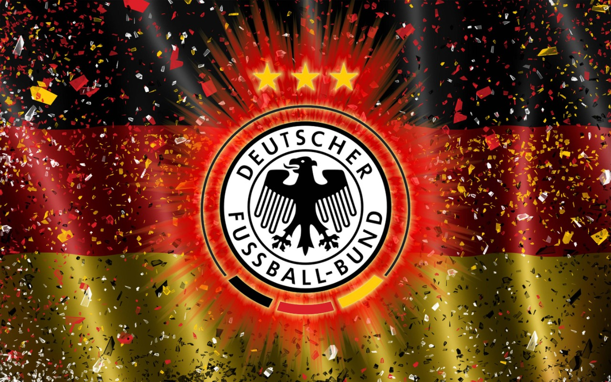Como na maioria das copas,ela está presente mais uma vez,a Alemanha.Tendo participado dezenove competições mundiais de seleção,foi quatro vezes campeã.Falando de atualidade,esse time conta com bons joadores como :Manuel neuer, Hofmann, Muller e Kimmich;estrelas de grandes times do mundo.Conta como técnico:Hans dieter.
| Alemanha | |||
|---|---|---|---|
| Datas | Horas | Estádios | Adversário |
| 23/11 | 10h | Khalifa | Japão |
| 27/11 | 16h | Al Bayt | Espanha |
| 01/12 | 16h | Al Bayt | Costa Rica ou Nova Zelândia |
2.Arábia Saudita
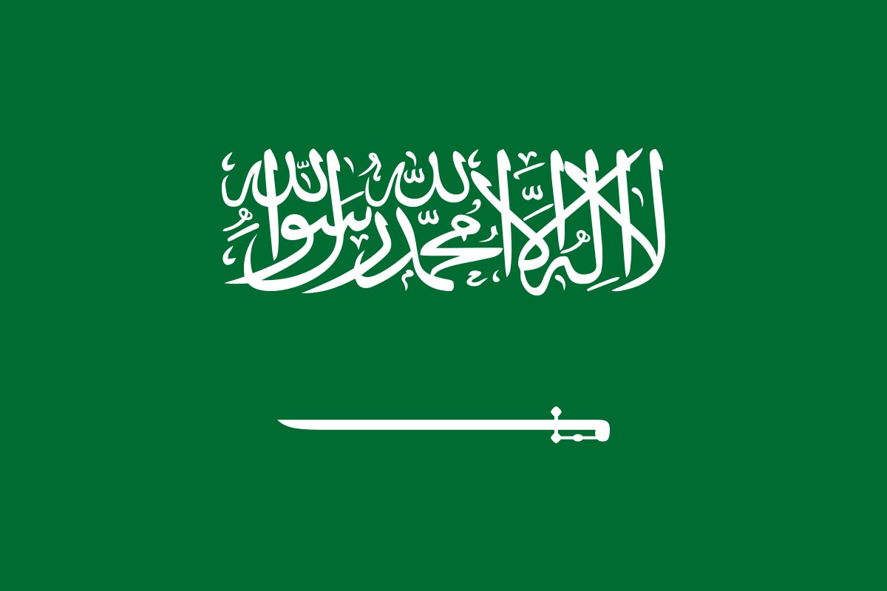Seleçao Saudita,recente nas competições mundias participou de somente seis Copas e nenhuma vez campeã. Seu atual time conta com joagdores habilidosos,como: Kanno, Al-Dawsari e Al-Abed e com o Técnico:Herví Renard.
| Arábia Saudita | |||
|---|---|---|---|
| Datas | Horas | Estádios | Adversário |
| 22/11 | 07h | Lusail | Argentina |
| 26/11 | 10h | Education City | Polônia |
| 30/11 | 16h | Lusail | México |
3.Argentina
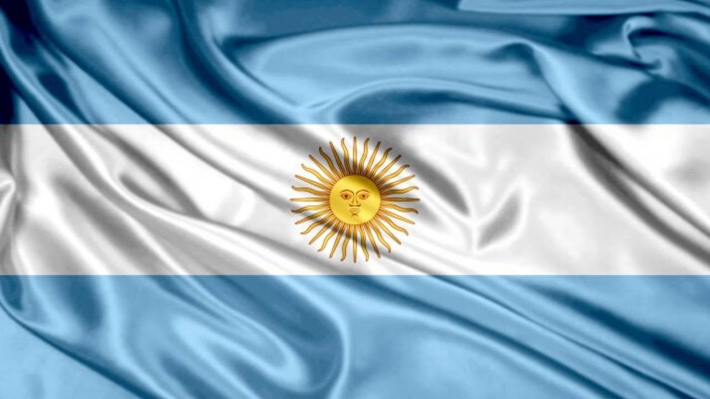A Argentina muito comentada em competições mundias porque sempre contam com grandes jogadores.Participou de 17 copas de conseguiu o caneco em duas.Seus principais jogadores são:Lionel Messi,Dybala,Di Maria, e Paredes e seu Técnico : Lionel Scaloni.
| Argentina | |||
|---|---|---|---|
| Datas | Horas | Estádios | Adversário |
| 22/11 | 07h | Lusail | Arábia Saudita |
| 26/11 | 16h | Lusail | México |
| 30/11 | 16h | 974(Porto de Doha) | Polônia |
4.Bélgica
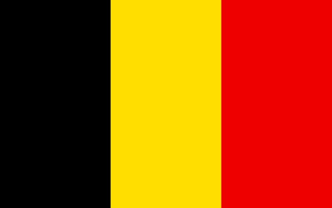Os belgas,um grande time.Participou de 13 copas e alcançou a vitória em uma. Seu atual técnico é :Roberto Martínez acompanhado de grandes jogadores :Eden Hazard, Courtois ,De Bruyne ,Praet e Carrasco.
| Bélgica | |||
|---|---|---|---|
| Datas | Horas | Estádios | Adversário |
| 23/11 | 16h | Ahmad Bin Ali (Al Rayyan) | Canadá |
| 27/11 | 10h | Al Thumama | Marracos |
| 01/12 | 12h | Ahmad Bin Ali (Al Rayyan) | Croácia |
5.Brasil
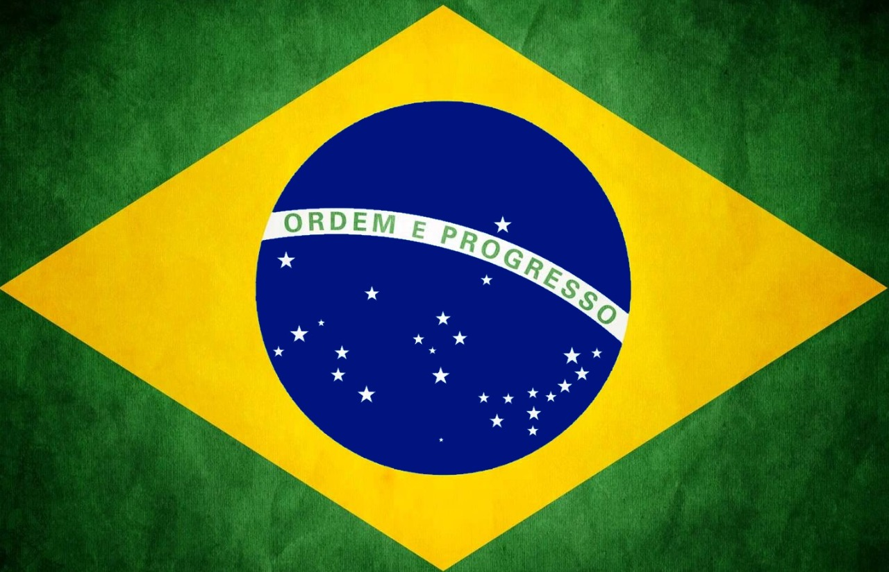Seleção Brasileira tem a maior história no futebol mundial,contou com os melhores jogadoes atuando com esse manto e até hoje esse fato se continua.O técnico desse grande manto é : Tite que vem acompanhado de grandes estrelas cono :Neymar, Vinicius Junior, Casemiro e Antony. Vale mencionar que o time brasileiro inteiro é feito de grandes atletas.
| Brasil | |||
|---|---|---|---|
| Datas | Horas | Estádios | Adversário |
| 24/11 | 16h | Lusail | Sérvia |
| 28/11 | 13h | 974(Porto de Doha) | Suíça |
| 02/12 | 16h | Lusail | Camarões |
6.Camarões
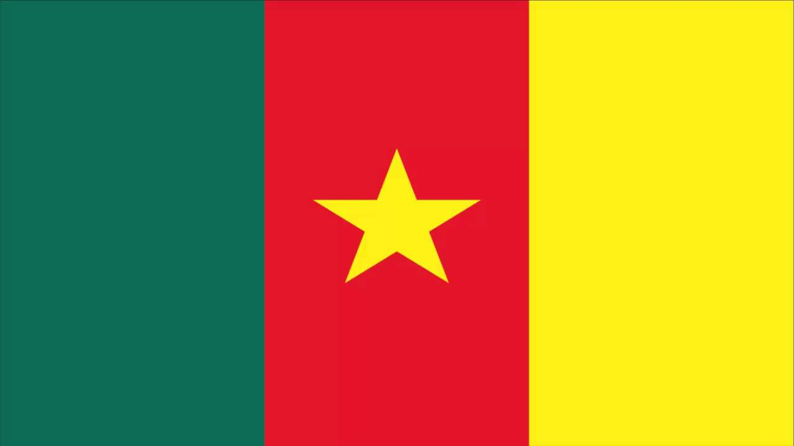A seleção Camaronesa contou com sua presença oito vezes na Copa do Mundo e nenhuma vez campeã. Seu técnico é :Toni Conceição e seus principais jogadores são :Olinga, Toko Ekambi, Eteki.
| Camarões | |||
|---|---|---|---|
| Datas | Horas | Estádios | Adversário |
| 24/11 | 7h | Al Janoub (Al Wakrah) | Suíça |
| 28/11 | 7h | Al Janoub (Al Wakrah)) | Sérvia |
| 02/12 | 16h | Lusail | Brasil |
7.Canadá
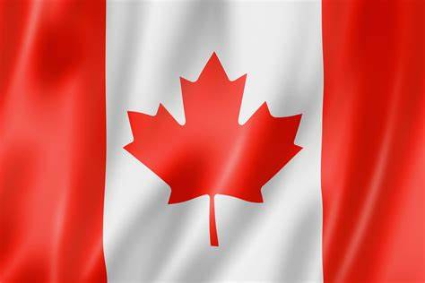Canadá tem uma breve hitória futebolística,pariticpou de apenas uma competição mundial sendo a segunda esse ano. Seu técnico é :John Herdman e seus principais jogadores :Osorio, Laryea, Larin, Corbeanu.
| Canadá | |||
|---|---|---|---|
| Datas | Horas | Estádios | Adversário |
| 23/11 | 16h | Al Janoub (Al Wakrah) | Bélgica |
| 27/11 | 13h | Khalifa | Croácia |
| 01/12 | 12h | Al Thumama | Marrocos |
8.Catar
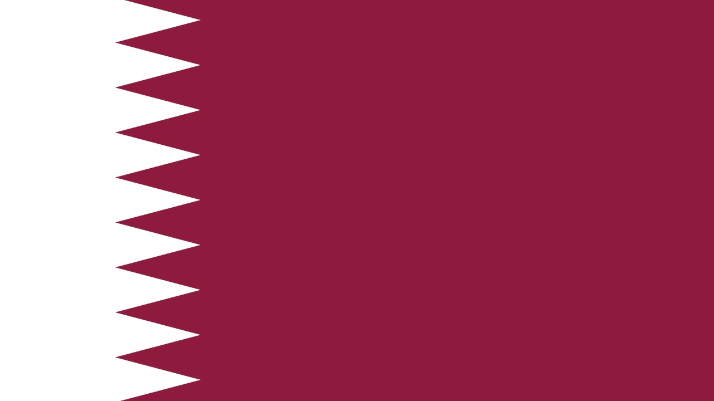Catar páis sede da copa o mundo de 2022,vai receber o times do mundo todo. Participou poucas vezes, somente duas e nenhuma campeã. Sediando o páis neste ano conta com o Técnico :Félix Sánchez e seus principais jogadores :Mohammad, Al-Haidos, Pedro Miguel.
| Catar | |||
|---|---|---|---|
| Datas | Horas | Estádios | Adversário |
| 21/11 | 13h | Al Bayt Stadium | Equador |
| 25/11 | 10h | Al Thumama | Senegal |
| 29/11 | 12h | Al Bayt | Holanda |
9.Coreia do Sul
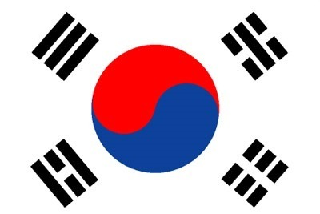Coreia do Sul teve partipações consideráveis,sendo estas 10 vezes mas não conseguindo alcançar o caneco nehnuma vez. Seu técnico é :Paulo Bento e seus principais jogadores :Hwang Ui-jo, Lee Dong-jun, King Gun-hee.
| Coreia do Sul | |||
|---|---|---|---|
| Datas | Horas | Estádios | Adversário |
| 24/11 | 10h | Education City | Uruguai |
| 28/11 | 10h | Education City | Gana |
| 02/12 | 12h | Education City | Portugal |
11.Croácia
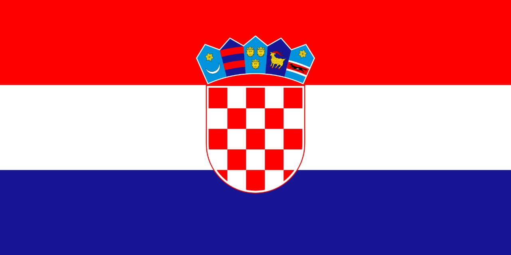A Croácia uma grande seleção que ja chegou a final dessa grande competição mas infelizmente não conseguiu a vitória. Participou três vezes e nehnuma campeã. Seu técnico :Zlatko Dalić e conta com grandes jogadores que atuam nos maiores clubes do mundo :Perišić. Modrić, Kovačić, Brozović, Vlašić.
| Croácia | |||
|---|---|---|---|
| Datas | Horas | Estádios | Adversário |
| 23/11 | 7h | Al Bayt | Marracos |
| 27/11 | 13h | Khalifa | Canadá |
| 01/12 | 12h | Ahmad Bin Ali (Al Rayyan) | Bélgica |
10.Dinamarca

Os dinamarqueses tem também uma breve história no futebol. Participou de 4 competições e sem nenhum ganho. Seu técnico :Kasper Hjulmand e ótimos joagadores principais da seleçáo :Braithwaite, Delaney, Vestergaard, Schmeichel, Daramy .
| Dinamarca | |||
|---|---|---|---|
| Datas | Horas | Estádios | Adversário |
| 22/11 | 10h | Education City | Tunísia |
| 26/11 | 13h | 974(Porto de Doha) | França |
| 30/11 | 12h | Al Janoub (Al Wakrah) | Peru ou Austrália ou Emirados Árabes |
12.Espanha
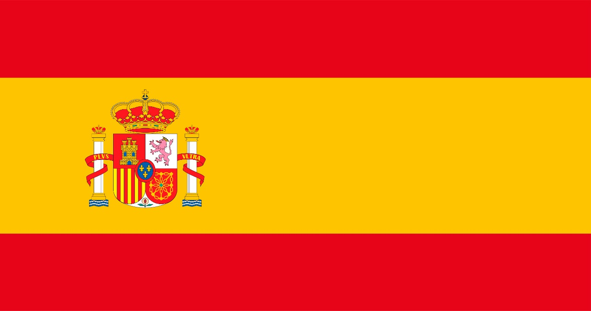Seleção Espanhola bastante falada nas CM,com uma carterística de "tique-taque" um time com passes muito rápidos,conta com 15 participações e uma garantia do caneco. Seu técnico :Luis Enrique que vem acompanhado com grandes jogadores,sendo :Brahim Díaz, Morata, Rodri, Azpilicueta, Alba.
| Espanha | |||
|---|---|---|---|
| Datas | Horas | Estádios | Adversário |
| 23/11 | 13h | Al Thumama | Costa Rica ou Nova Zelândia |
| 27/11 | 16h | Al Bayt | Alemanha |
| 01/12 | 16h | Khalifa | Japão |
13.Estados Unidos

Os Estados Unidos já participou consideravelmente nessa competição,contando 11 vezes com sua presença e nunca campeão.Seu atual técnico:Gregg Berhalter vindo com seus favoritos joagdores :Pulisic, Reyna, Musah, Steffen.
| Estados Unidos | |||
|---|---|---|---|
| Datas | Horas | Estádios | Adversário |
| 13/11 | 16h | Ahmad Bin Ali (Al Rayyan) | País de Gales ou Escócia ou Ucrânia |
| 27/11 | 13h | Al Bayt | Inglaterra |
| 01/12 | 12h | Ahmad Bin Ali (Al Rayyan) | Bélgica |
14.Equador
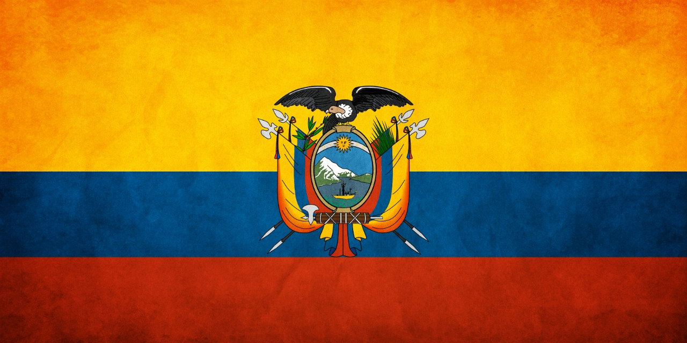Seleçao equatoriana participou pouquissímas vezes,apenas três,e campeão em nenhuma. Conta com o técnico :Gustavo Alfaro sendo seus principais jogadores :Plata ,Arboleda , Arón Rodríguez ,Jordy Caicedo .
| Equador | |||
|---|---|---|---|
| Datas | Horas | Estádios | Adversário |
| 21/11 | 13h | Al Bayt Stadium | Catar |
| 25/11 | 13h | Khalifa | Holanda |
| 29/11 | 12h | Khalifa | Senegal |
15.França
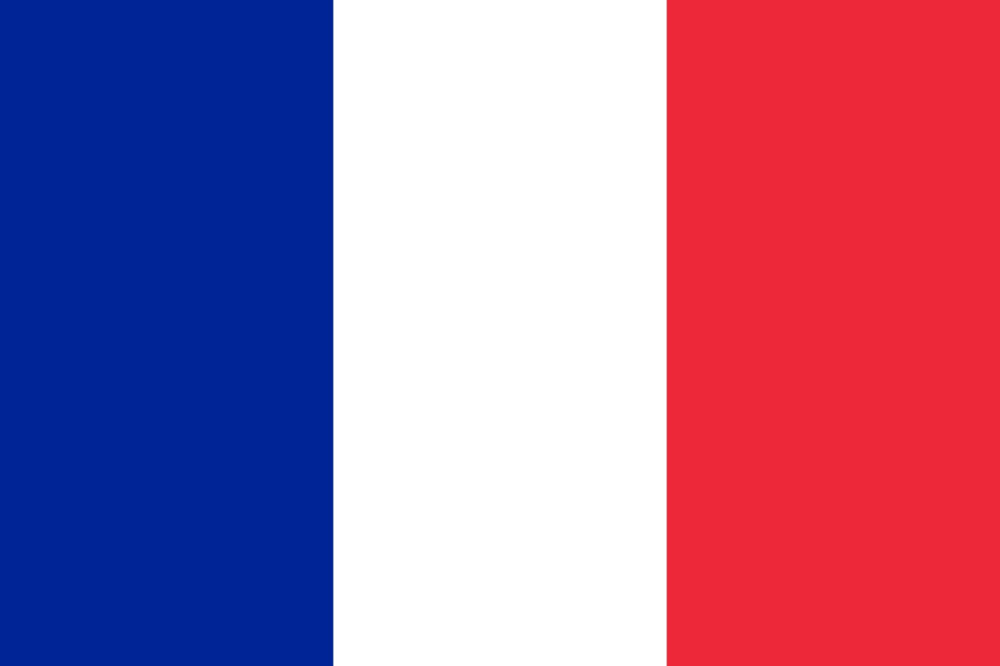Essa á favorita na Copa do Mundo,foi a última seleção a ganhar uma copa,um grande time.Participou dezesseis vezes e duas campeã. Seu técnico chamado :Didier Deschamps que virá com grandes jogadores como :Mbappé, Rabiot, Griezmann, Pogba, Benzema.
| França | |||
|---|---|---|---|
| Datas | Horas | Estádios | Adversário |
| 22/11 | 16h | Al Jonub (Al Wakrah) | Peru ou Austrália ou Emirados Árabes |
| 26/11 | 13h | 974 (Porto de Doha) | Dinamarca |
| 30/11 | 12h | Education City | Tunísia |
16.Gana
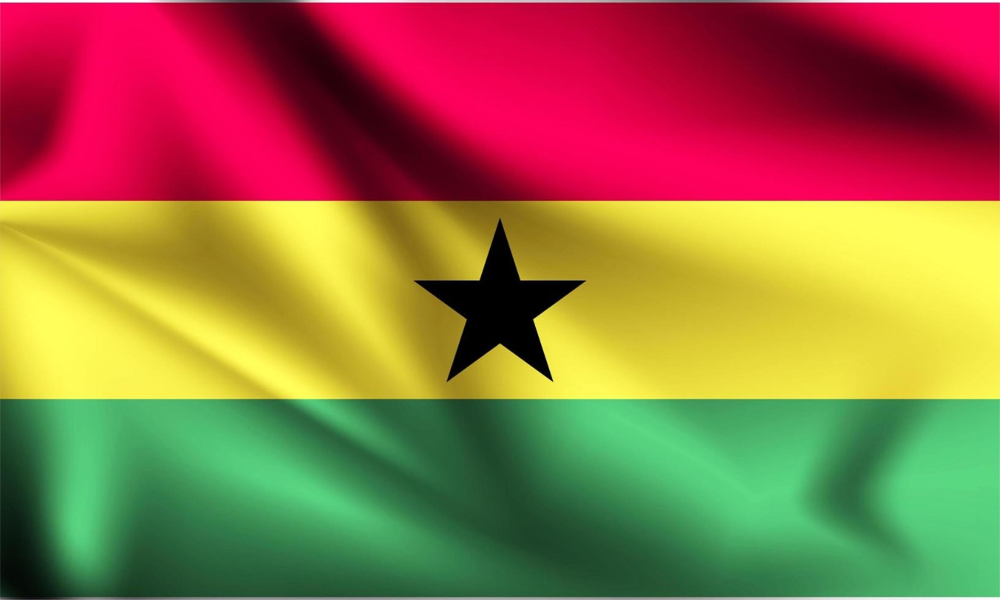A gana também participou poucas vezes,somente três e campeã nenhuma vez. Vira com o Técnico :Charles Akonnor com seus principais joagadoes :Thomas, Kudus, Bukari, Opoku.
| Gana | |||
|---|---|---|---|
| Datas | Horas | Estádios | Adversário |
| 24/11 | 13h | 974 (Porto de Doha) | Portugal |
| 28/11 | 10h | Education City | Coreia Sul |
| 02/11 | 12h | Al Janoub (Al Wakrah) | Uruguai |
17.Holanda
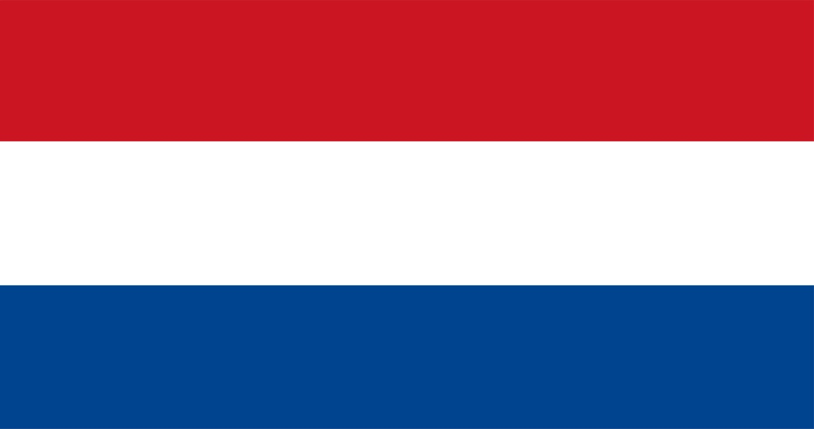A Holanda,chamada de"laranjinha-mecânica" da copa, participou nove vezes e nenhuma campeã,mas vale ressaltar que ja chegou em finais e semi-finais.Vem com seu técnico chamado :Louis van Gaal que os principais jogadoes que irão acompanhá-lo : Depay, Malen, Frenkie de Jong, Aké, van Dijk,Gravenberch.
| Holanda | |||
|---|---|---|---|
| Datas | Horas | Estádios | Adversário |
| 21/11 | 7h | Al Thumama | Senegal |
| 25/11 | 13h | Khalifa | Equador |
| 29/11 | 12h | Al Bayt | Catar |
18.Inglaterra

Seleção inglesa que dá bastante trabalho para os rivais na copa,um grande time.Participou de 15 copas e uma vez campeã. Virá em 2022 com o técnico: Gareth Southgate e suas estrelas como :Sterling, Foden, Rice ,Bellingham, Watkins.
| Inglaterra | |||
|---|---|---|---|
| Datas | Horas | Estádios | Adversário |
| 21/11 | 10h | Khalifa | Irã |
| 25/11 | 16h | Al Bayt | Estados Unidos |
| 29/11 | 16h | Ahmad Bin Ali (Al Rayyan) | País de Gales ou Escócia ou Ucrânia |
19.Irã
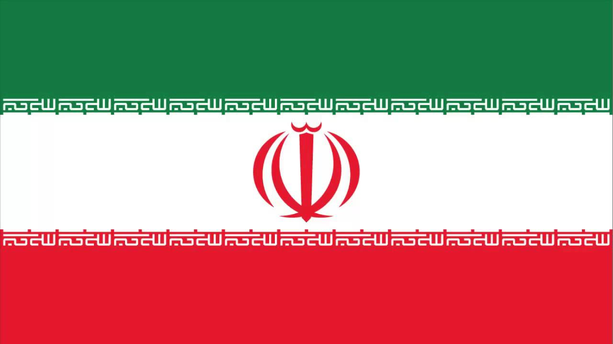Marcou presença cinco vezes mas em nenhuma levo o caneco. Seu técnico:Dragan Skočić que os acompanhará os jogadores :Shahbazzadeh, Azmoun, Ebrahimi, Hosseini.
| Irã | |||
|---|---|---|---|
| Datas | Horas | Estádios | Adversário |
| 21/11 | 10h | Khalifa | Inglaterra |
| 25/11 | 7h | Ahmad Bin Ali (Al Rayyan) | País de Gales ou Escócia ou Ucrânia |
| 29/11 | 12h | Al Thumama | Estados Unidos |
20.Japão
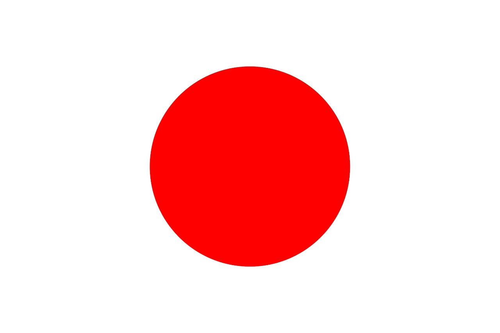Participou seis vezes da maior competições de seleções do mundo,mas,nenhuma campeã. Em 2022 virá com o técnico :Hajime Moriyasu e seus principais joagores serão:Takumi Minamino, Daizen Maeda, Yuta Nakayama, Gaku Shibasaki .
| Japão | |||
|---|---|---|---|
| Datas | Horas | Estádios | Adversário |
| 23/11 | 10h | Khalifa | Alemanha |
| 27/11 | 7h | Ahmad Bin Ali (Al Rayyan) | Costa Rica ou Nova Zelândia |
| 01/12 | 16h | Khalifa | Espanha |
21.Marrocos
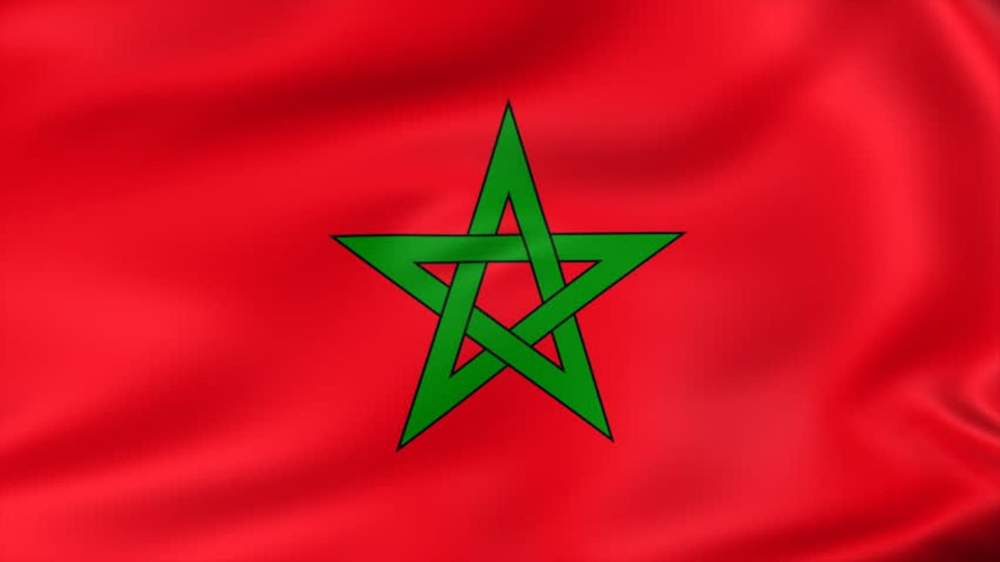Marrocos,já disputou a copa por cinco vezes mas não alcançou a maior a maior vitória. Ja em 2022 virá com seu técnico :Vahid Halilhodžić e seus melhores jogadores :Munir El Haddadi, Amrabat, Taarabt, Masina .
| Marrocos | |||
|---|---|---|---|
| Datas | Horas | Estádios | Adversário |
| 23/11 | 7h | Al Bayt | Croácia |
| 27/11 | 10h | Al Thumama | Bélgica |
| 01/12 | 12h | Al Thumama | Canadá |
22.México

Um grande time com fortes jogadores,já participou dezesseis vezes da maior competição do mundo. Conta com o técnico :Táta Martino que virá com grandes joagadores :Araujo, Álvarez ,Herrera ,Corona, Lozano.
| México | |||
|---|---|---|---|
| Datas | Horas | Estádios | Adversário |
| 22/11 | 13h | 974 (Porto de Doha) | Polônia |
| 26/11 | 16h | Lusail | Argentina |
| 30/11 | 16h | Lusail | Arábia Saudita |
23.Polônia
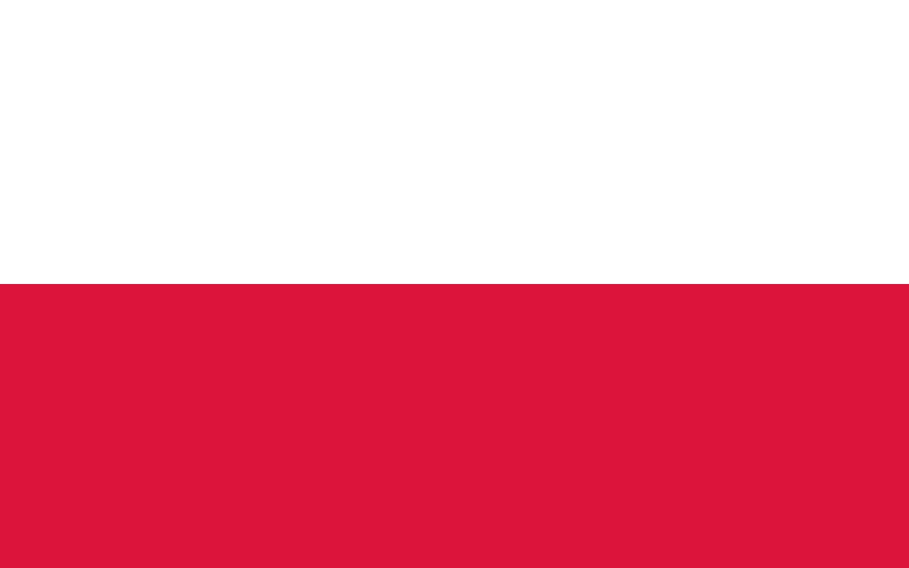A Polônia atuou oito vezes mas não ganhou alguma.Em 2022 virá com o técnico :Paulo Sousa e grandes jogadores: Bednarek, Zieliński, Lewandowski, Piątek.
| Polônia | |||
|---|---|---|---|
| Datas | Horas | Estádios | Adversário |
| 22/11 | 13h | 974 (Porto de Doha) | México |
| 26/11 | 10h | Education City | Arábia Saudita |
| 30/11 | 16h | 974 (Porto de Doha) | Argentina |
24.Portugal
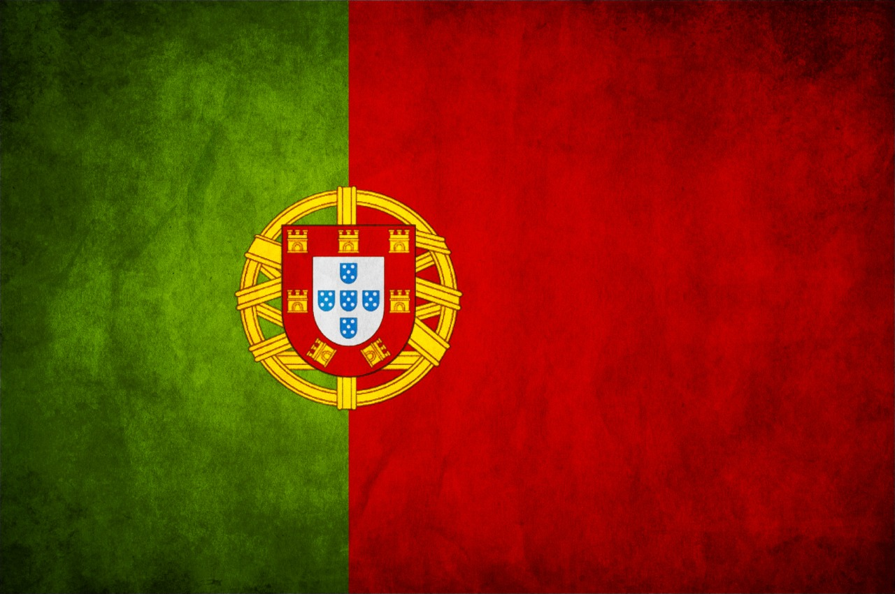Portugal conta com o melhor jogador do mundo para 2022.Seu técnico :Fernando Santos que irá vir com grandes jogadores :Ronaldo, Guedes ,Cancelo, Bernardo Silva, Jota.
| Portugal | |||
|---|---|---|---|
| Datas | Horas | Estádios | Adversário |
| 24/11 | 13h | 974 (Porto de Doha) | Gana |
| 28/11 | 16h | Lusail/td> | Uruguai |
| 02/12 | 12h | Education City | Coreia do Sul |
25.Senegal
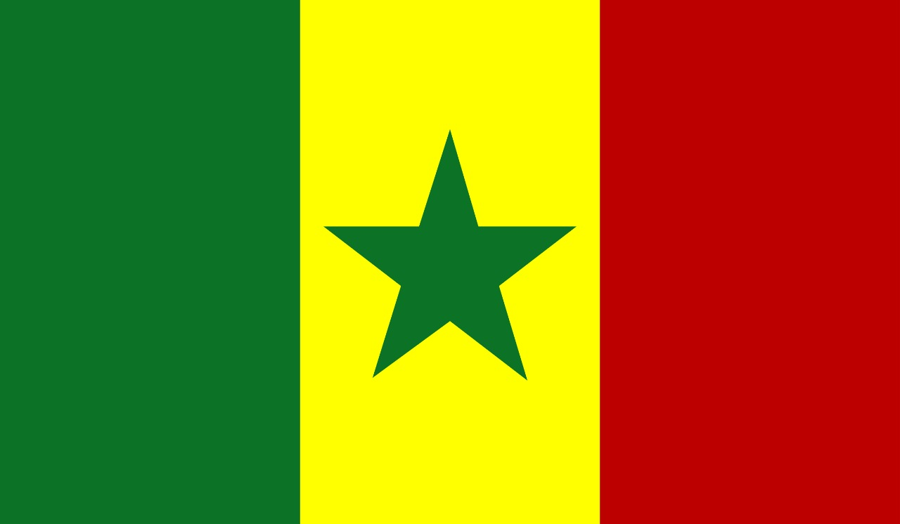O Senegal time com poucas partipações, sendo estas apenas duas e nenhuma vitória importante. Contará com o técnico: Aliou Cissé e seus principais jogadores como: Diallo, Diatta, Sabaly, Gueye ,Diop.
| Senegal | |||
|---|---|---|---|
| Datas | Horas | Estádios | Adversário |
| 21/11 | 7h | Al Thumama | Holanda |
| 25/11 | 10h | Al Thumama | Catar |
| 29/11 | 12h | Khalifa | Equador |
26.Sérvia
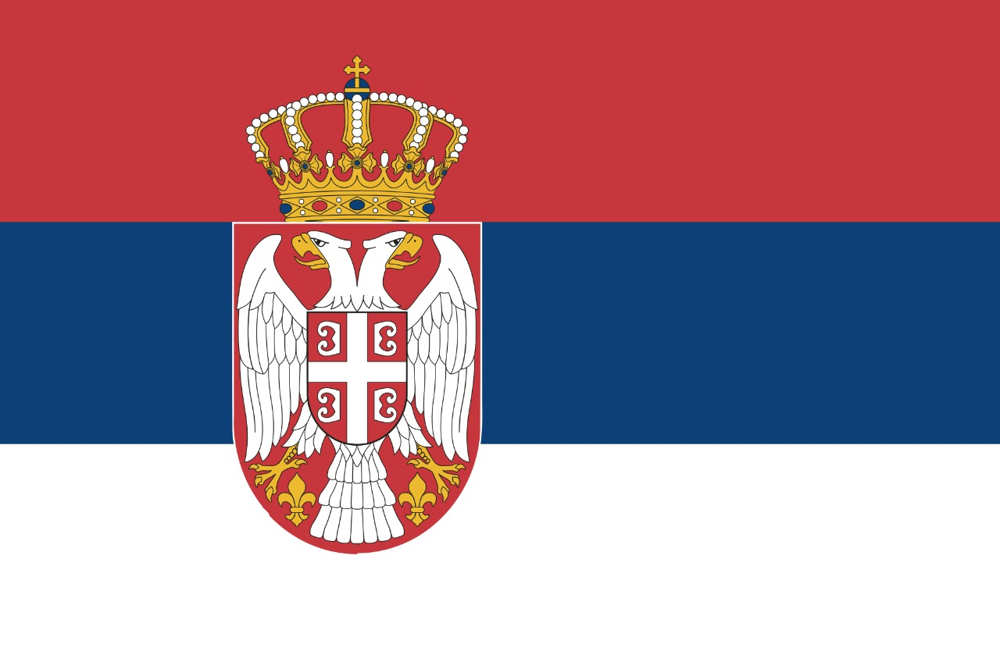Com doze atuações,Sérvia não consgue alcançar a premiação mais importante.Em 2022 virá com o técnico :Dragan Stojković e com seus principais jogadores : Gudelj, Grujić, Makarić, Pavlović
| Sérvia | |||
|---|---|---|---|
| Datas | Horas | Estádios | Adversário |
| 24/11 | 16h | Lusail | Brasil |
| 28/11 | 7h | Al Janoub (Al Wakrah) | Sérvia |
| 02/12 | 16h | 974 (Porto de Doha) | Suiça |
27.Suiça
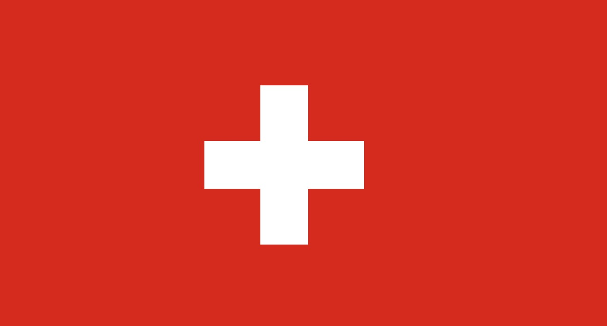Com onze atuações,Suiça não consegue alcançar a premiação mais importante.Em 2022 virá com o técnico :Murat Yakın e com seus principais jogadores : Xherdan Shaqiri, Granit Xhaka, Yann Sommer
| Suíça | |||
|---|---|---|---|
| Datas | Horas | Estádios | Adversário |
| 24/11 | 7h | Al Janoub (Al Wakrah) | Camarões |
| 28/11 | 13h | 974 (Porto de Doha) | Brasil |
| 02/12 | 16h | 974 (Porto de Doha) | Sérvia |
28.Tunísia
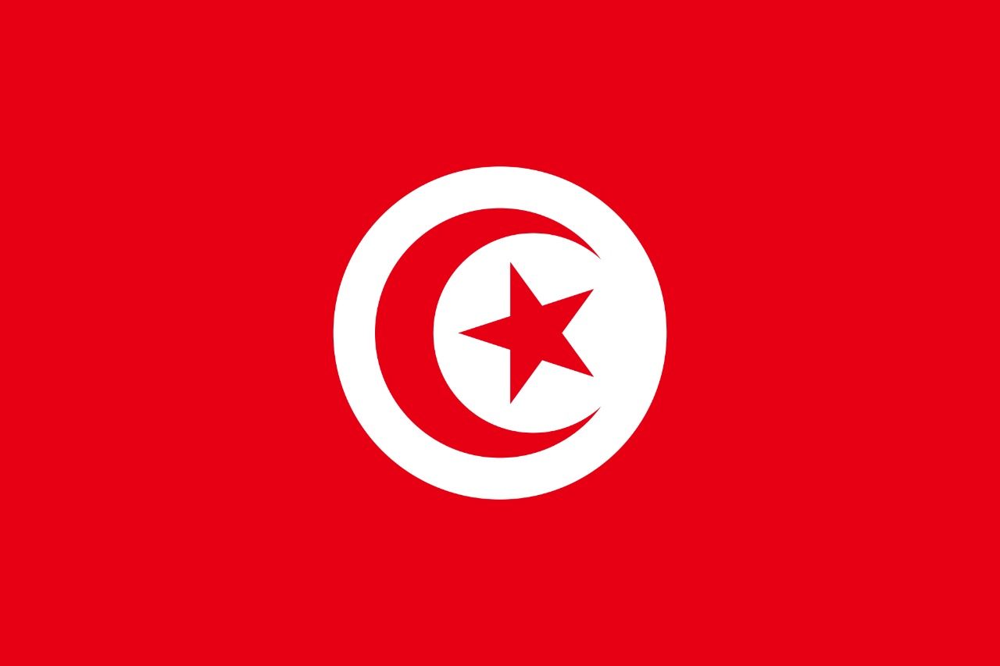Teve cinco partipações ao total na CM,e nenhuma conquista.Ja no ao de 2022 virá com o técnico :Mondher Kebaier e seus jogadores :Rafia, Rekik ,Khazri ,Youssef , Laïdouni .
| Tunísia | |||
|---|---|---|---|
| Datas | Horas | Estádios | Adversário |
| 22/11 | 10h | Education City | Dinamarca |
| 26/11 | 7h | Al Janoub (Al Wakrah) | Peru ou Austrália ou Emirados Árabes |
| 30/11 | 12h | Education City | França |
29.Urugai

Uma grande seleção,com treze participações e dusas vezes campeã.Chegará em 2022 com o técnico :Diego Alonso e seus principais jogadores :Luis Suárez, Cavani, De La Cruz ,Bentancur, Valverde ,Araújo.
| Uruguai | |||
|---|---|---|---|
| Datas | Horas | Estádios | Adversário |
| 24/11 | 10h | Education City | Coreia so Sul |
| 28/11 | 16h | Lusail | Portugal |
| 02/12 | 12h | Al Janoub (Al Wakrah) | Gana |